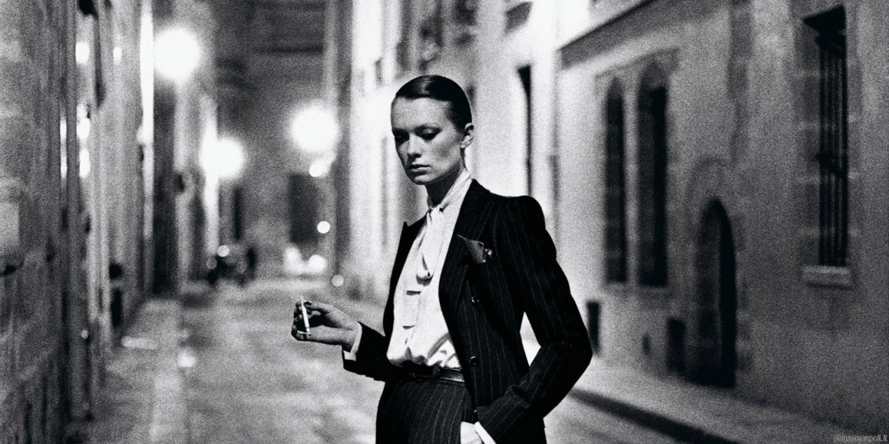

Home

Det her er min Portfolio. Her viser jeg lidt om hvad jeg går og laver på studiet, samt hvilke ideer og processer jeg arbejder med. Jeg er vildt inspireret af fotografer som prøver at fange det lidt mere "Old school" perspektiv, og hvordan de arbejder med kontraster, specielt sort/hvid. Min største inspiration er Helmut Newton. Han har taget nogle helt fantastiske billeder set med mine øjne. - Rasmus Herning